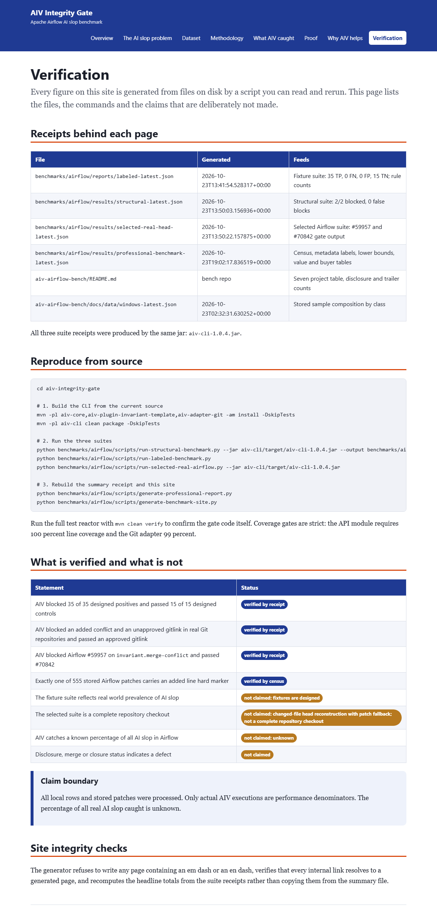

Verification
Every figure on this site is generated from files on disk by a script you can read and rerun. This page lists the files, the commands and the claims that are deliberately not made.
Receipts behind each page
| File | Generated | Feeds |
|---|---|---|
benchmarks/airflow/reports/labeled-latest.json | 2026-10-23T13:41:54.528317+00:00 | Fixture suite: 35 TP, 0 FN, 0 FP, 15 TN; rule counts |
benchmarks/airflow/results/structural-latest.json | 2026-10-23T13:50:03.156936+00:00 | Structural suite: 2/2 blocked, 0 false blocks |
benchmarks/airflow/results/selected-real-head-latest.json | 2026-10-23T13:50:22.157875+00:00 | Selected Airflow suite: #59957 and #70842 gate output |
benchmarks/airflow/results/professional-benchmark-latest.json | 2026-10-23T19:02:17.836519+00:00 | Census, metadata labels, lower bounds, value and buyer tables |
aiv-airflow-bench/README.md | bench repo | Seven project table, disclosure and trailer counts |
aiv-airflow-bench/docs/data/windows-latest.json | 2026-10-23T02:32:31.630252+00:00 | Stored sample composition by class |
All three suite receipts were produced by the same jar: aiv-cli-1.0.4.jar.
Reproduce from source
cd aiv-integrity-gate # 1. Build the CLI from the current source mvn -pl aiv-core,aiv-plugin-invariant-template,aiv-adapter-git -am install -DskipTests mvn -pl aiv-cli clean package -DskipTests # 2. Run the three suites python benchmarks/airflow/scripts/run-structural-benchmark.py --jar aiv-cli/target/aiv-cli-1.0.4.jar --output benchmarks/airflow/results/structural-latest.json python benchmarks/airflow/scripts/run-labeled-benchmark.py python benchmarks/airflow/scripts/run-selected-real-airflow.py --jar aiv-cli/target/aiv-cli-1.0.4.jar # 3. Rebuild the summary receipt and this site python benchmarks/airflow/scripts/generate-professional-report.py python benchmarks/airflow/scripts/generate-benchmark-site.py
Run the full test reactor with mvn clean verify to confirm the gate code itself. Coverage gates are strict:
the API module requires 100 percent line coverage and the Git adapter 99 percent.
What is verified and what is not
| Statement | Status |
|---|---|
| AIV blocked 35 of 35 designed positives and passed 15 of 15 designed controls | verified by receipt |
| AIV blocked an added conflict and an unapproved gitlink in real Git repositories and passed an approved gitlink | verified by receipt |
AIV blocked Airflow #59957 on invariant.merge-conflict and passed #70842 | verified by receipt |
| Exactly one of 555 stored Airflow patches carries an added line hard marker | verified by census |
| The fixture suite reflects real world prevalence of AI slop | not claimed: fixtures are designed |
| The selected suite is a complete repository checkout | not claimed: changed-file head reconstruction with patch fallback; not a complete repository checkout |
| AIV catches a known percentage of all AI slop in Airflow | not claimed: unknown |
| Disclosure, merge or closure status indicates a defect | not claimed |
Claim boundary
All local rows and stored patches were processed. Only actual AIV executions are performance denominators. The percentage of all real AI slop caught is unknown.
Site integrity checks
The generator refuses to write any page containing an em dash or an en dash, verifies that every internal link resolves to a generated page, and recomputes the headline totals from the suite receipts rather than copying them from the summary file.